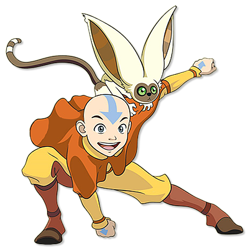

Click in the Icons to See our take on that character!!!
Aang (Avatar: La Leyenda de Aang)
El diseño de personaje de Aang refleja su personalidad, su pose es dinámica, sus ropas están todavía flotando en el aire para indicar movimiento y su pose a nivel general parece como si estuviera aterrizando y estuviera tratando de equilibrarse. Su cara, sus orejas y la forma de sus ojos muestran un personaje más del tipo inocente. Está sonriendo y tiene una expresión abierta, así que lo puedes identificar como un personaje extrovertido y feliz. Además su diseño ayuda a transmitir su edad joven, siendo que solo tiene 12 años. Su paleta de colores es principalmente de colores cálidos dando la impresión de alguien con una actitud igualmente cálida. El amarillo y anaranjado predominan, dando la idea de alguien alegre, entusiasta, creativo y determinado, debido a que ambos colores se potencian mutuamente en estas caracteristicas. Por otro lado, su flecha es azul, de esta manera representa su nación que está relacionada con el elemento del aire, y permite un buen contraste con los colores cálidos, dado que el azul es un color frío, como con el anaranjado que es su complementario. De manera similar, el azul se puede relacionar con la espiritualidad y después de todo Aang es un monje y el avatar, que es es el equivalente al Dalai Lama, él es la guía espiritual y la figura espiritual más importante dentro de la serie.
Newt Scamander (Animales Fantásticos y dónde encontrarlos)

El diseño del traje de Newt tiene una paleta de colores que utiliza principalmente colores oscuros, con algunos toques de colores brillantes para hacer contraste. Esto sirve para atraer atención a partes importantes como su rostro y su varita. El color en su chaleco es amarillo tanto para dar a entender su actitud alegre y servicial como para hacer referencia a la casa de Hufflepuff, a la que pertenece, cuyo color representativo es el amarillo y que representa los valores de leal, trabajo y confiabilidad. El porte de sus ropas es más formal de lo común hoy en día y nos refiere a una época pasada, esta también nos permite inferir la época del año y ubicarla en otoño o invierno, pues es bastante abrigada. Otro aspecto de su diseño es su corbatín, que aunque no parezca importante nos indica una personalidad algo traviesa y le da un aire más inofensivo. Otro detalle que atrae la atención es su maletín, claramente no es nuevo, mas tampoco está descuidado, es algo preciado para él pues es donde habitan diversas criaturas mágicas de las que el se encarga de cuidar y proteger, siendo él alguien cariñoso y que toma el rol de protector. Esta pose lo muestra listo para embarcarse en una aventura; y su expresión demuestra un carácter juguetón.
La Reina Roja (Alicia en el país de las Maravillas 2010)
El vestuario de la Reina Roja utiliza principalmente colores rojo, dorado y negro para representar su posición como miembro de la realeza y la burguesía. En el pasado el color rojo era uno de los colores de ropa más caros que se podían encontrar debido a la escasez de pigmentos rojos con que teñir la tela, por esta razón son usualmente en las cosas ambientadas en el pasado son los personajes de mucho dinero los que son representados usando ropa roja; de manera parecida, el dorado en su ropa es muy probablemente hilo de oro, lo cual sirve para remarcar su poder adquisitivo. El rojo es su color principal lo que nos permite idear su personalidad, siendo ella alguien con poder, soberbia y de fuerte y explosivo temperamento. Su maquillaje es exagerado y caprichoso, mostrando tanto su personalidad extravagante como reforzando su posición como miembro de la burguesía. La proporción de su cabeza nos da la idea de alguien presumida y engreída. Por último, su expresión es arrogante y despiadada y su pose es la de alguien acostumbrada a mandar y ser obedecida sin rechistar.
Peter Pan (Peter Pan)

Peter Pan es una mezcla de figuras circulares y triangulares. Su rostro es circular para dar la impresión de niñez, mientras su ropa y perfil son más triangulares para denotar su personalidad energética y su arquetipo de héroe. Su paleta de colores está conformada de verdes con detalles rojos, ambos colores que representan correctamente su personalidad. El verde representa juventud, inmadurez y esperanza, todas características de este personaje, mientras el rojo representa su temperamento cambiante y su terquedad. Esta combinación tiene además la ventaja de ser colores complementarios lo que hace que ambos colores destaquen. Su pose es juguetona y algo caprichosa al estar descansando en una nube, personificando el sentido de la aventura juvenil.
Maria Campbell (Otome Game no Hametsu Flag)
El diseño de Maria está hecho con líneas redondeadas o curvas, ubicándola con los personajes circulares, los cuales son caracterizados como inocentes y cuidadores. Su paleta de colores está basada en colores cálidos que representan una persona cálida. Sus ojos son azules, siendo el único color frío en el dibujo y con mayor saturación que el resto de su paleta de colores lo que llama la atención a sus ojos, que tienen una forma redondeada para expresar la inocencia del personaje. El resto de su paleta cae en colores pastel, lo que corresponde más a la idea de alguien suave y linda. Su color principal es el rosado relacionado con cariño, generosidad, delicadeza y feminidad, todos estas características presentes en este personaje. El corte de su ropa nos ubica en la época medieval, sin embargo no es tan ostentoso como otros característicos de nobleza de ese periodo así que podemos inferir que ella no forma parte de estos círculos sociales. Los accesorios que ella usa como son las flores y el lazo permiten reforzar la idea de alguien linda, inocente e inofensiva.
Iida Tenya (My Hero Academia)
Iida es un personaje cuadrado, es alguien estable, confiable, fuerte y un poco obstinado. Estas características son reforzadas por el uso del color azul oscuro que, además de esas cualidades, también representa lealtad y seguridad. Él encarna todas estas cualidades, así como lo bueno y la bondad representadas con el color blanco. Su traje da la idea de algo mecánico, similar al diseño de carros, esto es una representación de su poder, que se manifiesta con motores de automóviles en cada una de sus pantorrillas, lo que le permite alcanzar grandes velocidades. Utiliza también lentes de marco cuadrado que, junto al color azul, son característicos en la animación oriental en personajes orientados a la lógica más que los sentimientos y que tienden a ser de los que siguen y hacen cumplir las reglas; personajes de gran intelecto y confiables.